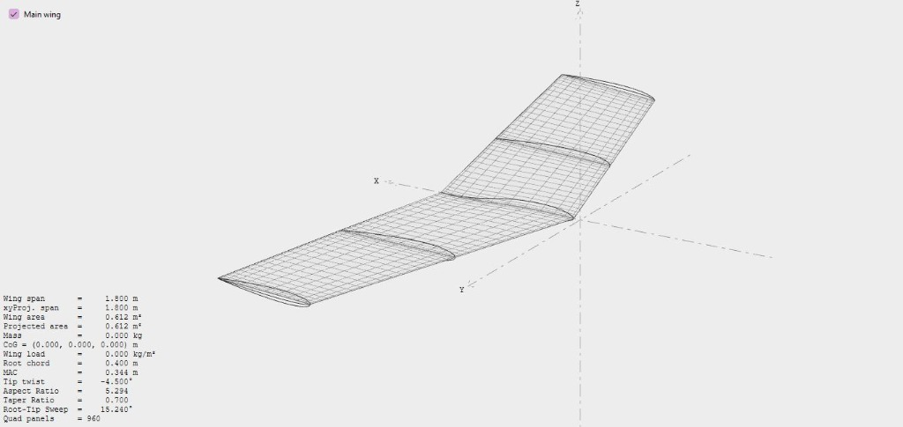

“I work across the full aerodynamic analysis chain—from CATIA V5 and 3-level GCI meshing to ANSYS Fluent RANS CFD, verifying every result before reporting it.”
Featured Engineering Projects

Asymmetric Aerodynamic Structural Analysis of ATR 72-600 Using the Actuator Method
Modelled the complete ATR 72-600 (wing, fuselage, nacelles, empennage) in CATIA V5 and simulated it in ANSYS Fluent with ADMv2 and k-ω SST for aerodynamic load extraction across take-off (116 KCAS, 10° AoA) and OEI climb (115 KCAS, 6° AoA), backed by a three-level Grid Convergence Index study. First author of a journal manuscript in preparation.

GE90 High-Bypass Turbofan Assembly
Detailed multi-stage fan, spinner, nacelle, and core assembly modelled in CATIA V5 from engineering drawings and reference material.

Eurojet EJ200 Military Turbofan
Full cutaway, convergent-divergent nozzle actuator linkages, and compressor stages modelled in CATIA V5.

Carter Fusion 260 Business Jet Concept
16-passenger ultra-long-range concept (MTOW 27,295 kg, range 7,860 km). Personally owned component-level mass estimation & CG balance across four loading cases (0.236–0.293 MAC).

Tailless UAV AVL & BEM Propeller Matching
1.80 m swept tailless flying-wing reference design (E186 / MH49 reflexed airfoils, −4.5° washout, 960 quad panels) analysed in AVL with section polars and delivered as STEP AP242.

Parametric Bike Brace & Bearing-Mounted Flat Pedal
Spreadsheet-driven PartDesign solids and A3 ISO 2768-m production drawings in FreeCAD: a 6061-T6 two-bore split clamp and a 20-insert stainless-steel pedal assembly.
Experience & Technical Track
Aerospace Subject-Matter Expert (Contract)
- Authored aerospace engineering design benchmarks, each with an engineering brief, data handbook, buildable reference design, and reproducible open-source simulation.
- Built a tailless UAV flying-wing design task, with the reference design analysed in AVL using section polar data and delivered as STEP AP242 geometry.
- Developed a propeller and motor matching task across multiple operating points, solved with blade element momentum (BEM) analysis.
- Reviewed engineering solutions to separate genuine aerodynamic-reasoning errors from specification defects.
Remote CAD Engineering Intern
- Built detailed CATIA V5 models of the GE90 and Eurojet EJ200 turbofan engines from engineering drawings and reference material.
- Delivered multi-view assemblies and fan/core cutaway visualisations for technical design reviews.
Aircraft Maintenance (Nine Months Total)
- Nine months of maintenance work across six platforms: King Air 300, Hughes 369H, Do 228, Bell UH-1, Super Mushshak, and Diamond DA.
- Executed scheduled inspections, maintenance records, and engineering documentation across both NAF commands.
How I Approach Engineering Problems
CAD & Low-Order Sizing
Parametric geometry in CATIA V5, SolidWorks, FreeCAD, or CadQuery paired with rapid aerodynamic sizing in AVL, XFOIL, NeuralFoil, and BEM.
Meshing & Verification
Clean fluid domains in SpaceClaim and poly-hexcore meshing in Fluent Meshing, verified with three-level Grid Convergence Index (GCI) studies.
RANS CFD & Post-Processing
Steady RANS with k-ω SST and actuator-disk propulsion modelling in ANSYS Fluent, checking every convergence diagnostic before reporting loads.
Let’s Build & Verify What Flies
Available for full-time aerospace engineering roles, CFD/CAD consulting, and aircraft design analysis projects.